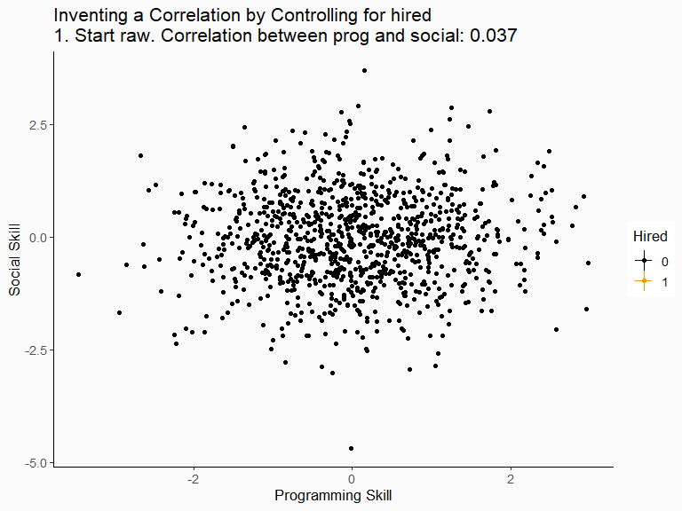
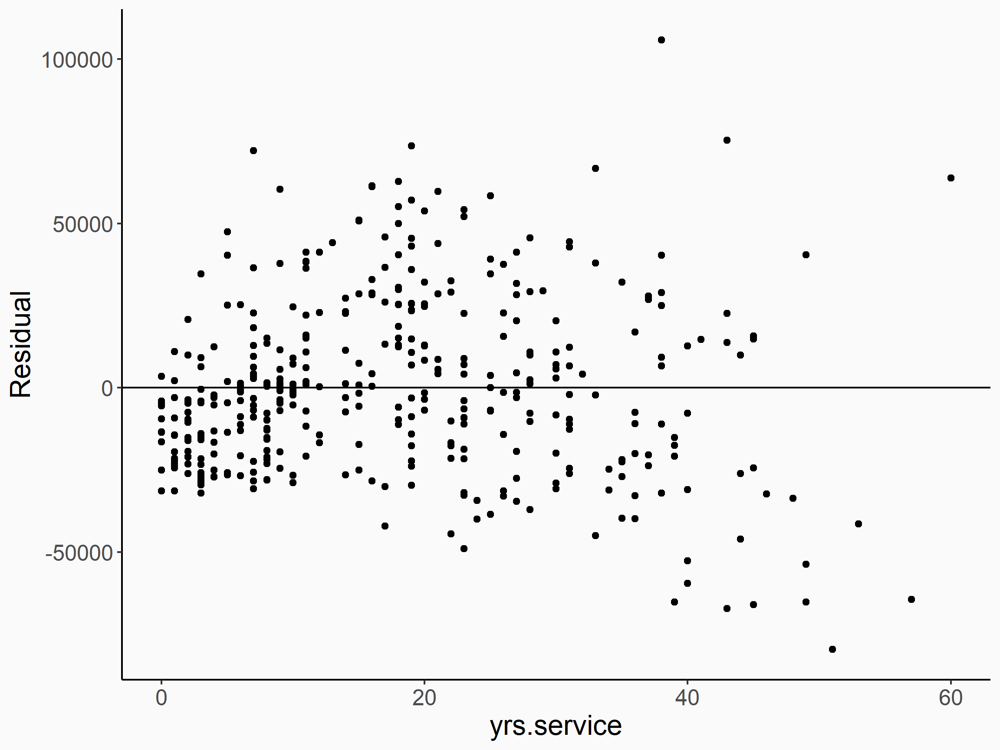

Multivariate Regression
Zahid Asghar
10/19/22
Controls
- Last time we talked about multivariate regression and controlling for variables
- If our \(X\) of interest is related to the error term, we have endogeniety, and the mean of the sampling variation of \(\hat{\beta}_1\) won’t be \(\beta_1\) (i.e. it’s biased)
- If we can figure out all the other reasons why \(X\) and \(Y\) might be related, the back doors. And we can close those back doors to identify our effect by controlling for variables along those back door paths
- We draw a causal diagram and list the paths
- If we can control for one thing on each path, then that washes out the variation from those paths, and the only remaining reason \(X\) and \(Y\) are related is that \(X\) causes \(Y\) - causal identification!
Today
- Today we’re going to talk more about controlling
- Including when you don’t want to control for things
- We’ll also talk about how to actually perform multivariate regression
- As well as do some things that go along with it (those F-statistics will finally be useful!)
Bad Controls
- Last time, we were careful to draw a causal diagram, list out the paths, and control for something that would close each path we don’t want to include
- Couldn’t we just skip this all and control for everything we can think of?
- No! There are a few reasons why adding controls when you shouldn’t can make your estimate worse:
- Washing out too much variation
- Post-treatment bias
- Collider bias
Washing out Too Much Variation
- When we control for a variable \(Z\), we wash out all the variation in \(X\) and \(Y\) associated with that variable
- Which means that we can also think of \(\hat{\beta}_1\) from that regression as saying “within the same value of \(Z\), a one-unit change in \(X\) raises \(Y\) by \(\hat{\beta}_1\)”
- So we have to think carefully about whether that statement actually makes sense!
- (this is very similar to the concept of “collinearity”)
Washing out Too Much Variation
- For example, let’s say we want to know the effect of being in a business school \(IBA\) on \(Earnings\)
- However, we also know that your college major is strongly related to whether you’re in IBA, and causes your \(Earnings\)
- But if we control for \(Major\), we’re saying “within the same major, being in the business school vs. not has a \(\hat{\beta}_1\) effect on earnings”
- What does that even mean? You’re comparing econ majors in vs. out of the business school… but who are the econ majors not in the business school? And who are the English majors in the business school to compare against the English majors not in IBA?
- Controlling for major would make the regression impossible to interpret. Plus, it would provide an estimate based entirely on the few people it can find who are English majors in IBA or Econ majors out of IBA - is that representative?
Washing out Too Much Variation
- When adding a control, it’s always useful to think about who you’re comparing and if that variation really exists in the data
- In thinking about the effect of being in \(IBA\), we really want to compare people between in-IBA and out-of-IBA majors
- Controlling for \(Major\) is asking OLS to compare people within majors
- So it doesn’t really make sense to control for major. We want that effect in there!
Post-Treatment Bias
- Remember this diagram from last time?
Post-Treatment Bias
- We determined that we needed to control for \(Location\) and \(Background\) but not \(Skills\). Why?
- Because \(Skills\) is part of the effect we’re trying to pick up!
- If \(Preschool\) affects \(Earnings\) *because it improves your \(Skills\), then we’d count that as being a valid way that \(Preschool\) affects \(Earnings\)
- \(Skills\) is post-treatment, i.e. caused by treatment
- (note that all the arrows on the path \(Preschool \rightarrow Skills \rightarrow Earnings\) point away from \(Preschool\) )
Post-Treatment Bias
- What would happen if we did control for \(Skills\)? We’d be removing part of the real effect!
- To give another example, does the \(PriceOfCigarettes\) affect \(Health\)? It makes sense that it would
- But it makes sense that it would *because the price would affect \(Smoking\) which would affect \(Health\)
- If we controlled for \(Smoking\), then there’s no way for the price to affect health!
- We’d say that \(PriceOfCigarettes\) has no effect when really it does
Colliders
- One last reason to not control for something, and this one’s a bit harder to wrap your head around
- On a causal path from \(X\) to \(Y\), if there’s a variable on that path where both arrows on either side point at it, that’s a collider variable on that path
- Like this:
X <- W -> C <- Z -> Y. The arrows “collide” atC - If there’s a collider on a path, that path is automatically closed already
- But if you control for the collider, it opens back up!
- You can go from identified to endogenous by adding a control!
Colliders
- So here,
x <- a -> m <- b -> yis pre-blocked because ofm, no problem.aandbare unrelated, so no back door issue! - Control for
mand nowaandbare related, back door path open.
Example
- You want to know if programming skills reduce your social skills
- So you go to a tech company and test all their employees on programming and social skills
- Let’s imagine that the truth is that programming skills and social skills are unrelated
- But you find a negative relationship! What gives?
Example
- Oops! By surveying only the tech company, you controlled for “works in a tech company”
- To do that, you need programming skills, social skills, or both! It’s a collider!
Example
survey <- tibble(prog=rnorm(1000),social=rnorm(1000)) %>%
mutate(hired = (prog + social > .25))
basic <- feols(prog~social, data = survey)
hiredonly <- feols(prog~social, data = survey %>% filter(hired))
withcontrol <- feols(prog ~ social + hired, data = survey)
etable(basic, hiredonly, withcontrol)
## basic hiredonly withcontrol
## Dependent Var.: prog prog prog
##
## (Intercept) 0.0193 (0.0331) 1.018*** (0.0444) -0.7485*** (0.0354)
## social 0.0383 (0.0326) -0.4900*** (0.0433) -0.4245*** (0.0285)
## hiredTRUE 1.727*** (0.0583)
## _______________ _______________ ___________________ ___________________
## S.E. type IID IID IID
## Observations 1,000 432 1,000
## R2 0.00138 0.22937 0.46898
## Adj. R2 0.00038 0.22757 0.46792
## ---
## Signif. codes: 0 '***' 0.001 '**' 0.01 '*' 0.05 '.' 0.1 ' ' 1Graphically
Concept Checks
In each case, we’re controlling for something we shouldn’t. Is this a case of washing out too much variation, post-treatment bias, or collider bias?
- Effect of a wife’s eye color on her husband’s eye color, controlling for the eye color of their biological child
- Effect of religious denomination on how often you attend church services, controlling for the specific church someone attends
- Effect of a new error-reducing accounting system on profits, controlling for the number of accounting errors
- Effect of a merger on market prices, controlling for the level of market concentration
- Effect of a state’s intellectual property law on how many things an inventor invents, controlling for their hometown
Goodness of Fit
- Let’s switch gears a bit and talk about some of the statistical aspects of multivariate regression
- One is the goodness of fit. That is, OLS does as good a job as possible of using \(X\) and controls to explain \(Y\), but how good a job does it do?
- If the residuals are really big, then there’s a lot of noise in \(Y\) we’re not explaining!
- If they’re small, then most of what’s going on in \(Y\) is accounted for
R squared
- R squared is the square of the correlation between \(Y\) and our OLS predictions of \(Y\)
- It can be roughly thought of as “what proportion of the variance in \(Y\) can we explain with the variables in our model?”
- It’s not a measure of how good the model is (experiments often have low \(R^2\), and \(R^2\) doesn’t care about whether \(\hat{\beta}_1\) is unbiased)
- It’s not even a perfect measure even of predictive power (it doesn’t care about predicting out of sample, and is sensitive to irrelevant variables being added)
- Never choose your model based on the \(R^2\) being higher
- Every term, I tell students not to worry too much about \(R^2\), and every term I get students coming to me telling me they plan to change their model to raise \(R^2\). I am begging you not to worry too much about \(R^2\) It’s not that important for what we’re doing.
- It’s just a decent diagnostic to get a sense of how much of the variance \(Y\) you’re predicting, and how much is left over
R squared
- In both, true effect is the same, no endogeneity. Only difference is how much other, non - \(X\) - based variation there is in \(Y\)
R squared
- Those same two regressions in a table (note the SEs are different too! Concept check: why is that?)
## high low
## Dependent Var.: Y Y
##
## (Intercept) 0.1344 (0.1260) -0.0961 (0.3199)
## X 1.871*** (0.2132) 2.570*** (0.5564)
## _______________ _________________ _________________
## S.E. type IID IID
## Observations 1,000 1,000
## R2 0.07165 0.02093
## Adj. R2 0.07072 0.01995
## ---
## Signif. codes: 0 '***' 0.001 '**' 0.01 '*' 0.05 '.' 0.1 ' ' 1F tests
- The \(R^2\) reveals what was actually going on with those F-tests we did before
- An F-test of a regression sees if a regression predicts more accurately than a more restricted regression where some of the coefficients are forced to \(0\) (or to some other value)
- In other words, it might take the \(R^2\) of each of these two models and calculate something from them that has a F distribution (remember, F distribution is the ratio of squared sums of normals!) to test if \(\hat{\beta}_2\) and \(\hat{\beta}_3\) are both zero at the same time
- The top model IBA have a higher \(R^2\), but is it higher than you’d expect by random chance?
\[ Y = \beta_0 + \beta_1X + \beta_2Z + \beta_3A + \varepsilon \]
\[ Y = \beta_0 + \beta_1X + \varepsilon \]
F tests
- By the way, when we did this before with a single variable we were comparing:
\[ Y = \beta_0 + \beta_1X \varepsilon \]
to
\[ Y = \beta_0 + \varepsilon \]
- It’s also common to see an F-statistic at the bottom of a column for a regression table. This is, by convention, testing the full model in that column against the constant-only model. This pretty much always rejects the null and is mostly useless.
F tests
- Let’s predict some professor salaries
F tests
## unrestricted restricted
## Dependent Var.: salary salary
##
## (Intercept) 82,875.9*** (4,800.6) 91,718.7*** (2,765.8)
## yrs.since.phd 1,552.8*** (256.1) 985.3*** (107.4)
## yrs.service -649.8* (254.0)
## sexMale 8,457.1. (4,656.1)
## _______________ _____________________ _____________________
## S.E. type IID IID
## Observations 397 397
## R2 0.19510 0.17575
## Adj. R2 0.18896 0.17367
## ---
## Signif. codes: 0 '***' 0.001 '**' 0.01 '*' 0.05 '.' 0.1 ' ' 1F tests
- We basically just take a ratio based on \(R^2\) values. On top: additional explanatory power scaled by the number of restrictions (on top), and on bottom the explanatory power left to go scaled by \(N\) minus the number of variables
r2_unres <- fitstat(unrestricted, 'r2')$r2 %>% unname()
r2_res <- fitstat(restricted, 'r2')$r2 %>% unname()
# Calculate by hand
((r2_unres - r2_res)/2) / ((1 - r2_unres)/(397 - 4))
## [1] 4.72
# Have the wald() function do it for us (note F is the same!)
wald(unrestricted, c('yrs.service','sexMale'))
## Wald test, H0: joint nullity of yrs.service and sexMale
## stat = 4.72326, p-value = 0.009397, on 2 and 393 DoF, VCOV: IID.F tests
- Why would we want to do this?
- We might want to see if a set of variables has explanatory power: for example, does adding a bunch of background variables improve prediction?
- A t-test asks if a single coefficient is 0. The F-test asks if a bunch of coefficients are 0 at the same time
- If those variables overlap a lot, then each individual one might be insignificant but the group could be important
- Also, we might want to know if two coefficients are not just nonzero, but equal to each other
- “Does this variable have a similarly-sized effect to this other variable?”
F tests
- F tests are broader, too - you can test other restrictions on coefficients, not just seeing if they’re all 0
- Do
yrs.since.phdandyrs.servicehave the same effect but of opposite signs (in other words, if you add them together do you get 0)? No!
library(multcomp)
# Generalized Linear Hypothesis Test
glht(unrestricted, 'yrs.since.phd + yrs.service = 0') %>% summary()
##
## Simultaneous Tests for General Linear Hypotheses
##
## Fit: feols(fml = salary ~ yrs.since.phd + yrs.service + sex, data = Salaries)
##
## Linear Hypotheses:
## Estimate Std. Error t value Pr(>|t|)
## yrs.since.phd + yrs.service == 0 903 110 8.23 2.7e-15 ***
## ---
## Signif. codes: 0 '***' 0.001 '**' 0.01 '*' 0.05 '.' 0.1 ' ' 1
## (Adjusted p values reported -- single-step method)Concept Checks
- In a sentence, describe what \(R^2\) measures
- Give two reasons why you shouldn’t pick one model over another just based on its \(R^2\) value
- Finish the sentence: “The F-statistic shows whether the difference between \(R^2\) in an unrestricted model and a restricted model is bigger than…”
- What does it mean to say that two coefficients are “zero at the same time”?
Multivariate OLS in R
- Conveniently, adding more variables to an OLS model in R is just an issue of… literally adding them
Multivariate OLS in R
What else might we want to know?
- How to get the \(R^2\)
- How to do an F test
- How to look at residuals and control for something by hand
Getting R squared
- Well, we can just see it at the bottom of the default
etable()table, that works - We can also pull it out using
fitstat()which can also be used to get all sorts of other statistics
Doing an F test
- We already did one by hand! using the \(R^2\) values
- We can also use
wald()to test a set of coefficients being jointly 0 - Or
glht()in multcomp for testing more complex equations, or things not tested against 0 (rearrange the equation to have a constant on one side) - To account for heteroskedasticity, you can use
vcov = 'hetero'in thefeols()you feed either, or setvcovdirectly inwald()(but notglht)
Predictions and Residuals
- We can get a vector of predictions from a regression object with
predict()(or, withfeols(), optionallymodel$fitted.values) - And a vector of residuals with
resid()or optionally withfeols(),model$residuals - This turns out to be handy often in applied work! For example, maybe we want to plot those predicted values or residuals!
- Although for what we’ve covered so far it’s mostly just good for doing \(R^2\) or controlling by hand.
- Which can be good to get a feel for how this all works. Or just to learn how to use
predict()andresid()
Controlling by hand
etable(model)
## model
## Dependent Var.: salary
##
## (Intercept) 82,875.9*** (4,800.6)
## yrs.since.phd 1,552.8*** (256.1)
## yrs.service -649.8* (254.0)
## sexMale 8,457.1. (4,656.1)
## _______________ _____________________
## S.E. type IID
## Observations 397
## R2 0.19510
## Adj. R2 0.18896
## ---
## Signif. codes: 0 '***' 0.001 '**' 0.01 '*' 0.05 '.' 0.1 ' ' 1Controlling by hand
yrs_model <- feols(yrs.since.phd ~ yrs.service + sex, data = Salaries)
salary_model <- feols(salary ~ yrs.service + sex, data = Salaries)
my_data <- tibble(yrs_resid = resid(yrs_model),
salary_resid = resid(salary_model))
resid_model <- feols(salary_resid ~ yrs_resid, data = my_data)
etable(resid_model)
## resid_model
## Dependent Var.: salary_resid
##
## (Intercept) 2.81e-10 (1,365.6)
## yrs_resid 1,552.8*** (255.5)
## _______________ __________________
## S.E. type IID
## Observations 397
## R2 0.08552
## Adj. R2 0.08320
## ---
## Signif. codes: 0 '***' 0.001 '**' 0.01 '*' 0.05 '.' 0.1 ' ' 1Plotting Residuals
Plotting residuals from the full model against \(X\) is a good way to check for heteroskedasticity (or anything else super strange)
R squared by hand
Swirl
Let’s do the Multivariate Regression Swirl!